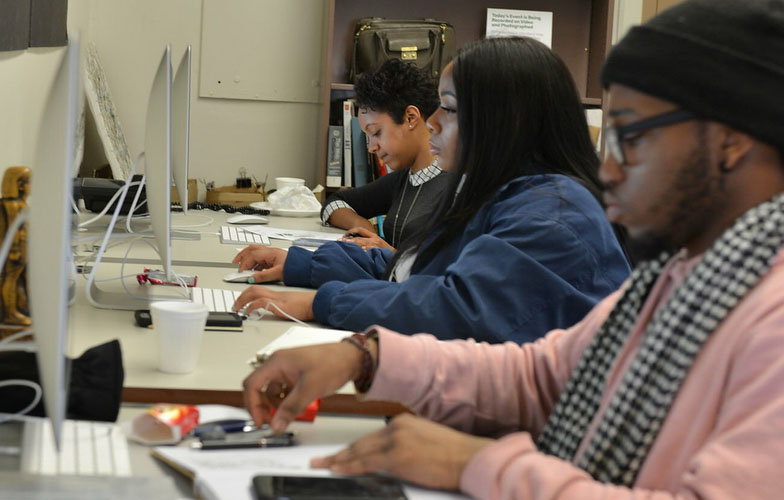

Bronx Community College
Digital Design
Degree: A.A.S
This program prepares students for careers in the visual communication industry
in positions such as graphic design, web design, computer animation,
3D graphic visualization, motion graphics design and interactive multimedia design.
Hostos Community College
Digital Design and Animation
Degree: A.S
Through lectures and studio-based classes the Digital Design and Animation
Program provides students with a strong foundation for future occupations
in motion graphics, animation, graphic design and/or web design.

Borough of Manhattan Community College
Multimedia Programming and Design
Degree: A.S
The Multimedia Programming and Design Program prepares students for careers in
a variety of multimedia industries, companies and institutions that develop,
produce or market multimedia products, programs or services.
Hostos Community College
Game Design
Degree: A.S
Through lectures and studio-based classes the Digital Design and Animation
Program provides students with a strong foundation for future occupations
in motion graphics, animation, graphic design and/or web design.
Kingsborough Community College
Graphic Design and Illustration
Degree: A.S
The Art Department at Kingsborough Community College is dedicated to providing a comprehensive program of
study in the visual arts, designed to prepare students of diverse life experience for
either continued baccalaureate study or immediate entry into a range of visual art professions.
Kingsborough Community College
UX Design
Degree: A.S
The Art Department at Kingsborough Community College is dedicated to providing
a comprehensive program of study in the visual arts, designed to
prepare students of diverse life experience for either continued baccalaureate
study or immediate entry into a range of visual art professions.
LaGuardia Community College
New Media Technology
Degree: A.A.S
"The New Media Technology major offers students the opportunity to work and experiment
with some of the exciting technologies available today.
Students develop a broad understanding of multimedia and Internet technologies in order
to develop expertise in creating digital content."
Kingsborough Community College
Digital Art and Design
Degree: A.S
The A.S. degree program in Digital Art and Design prepares students to enter the greatly
expanding field of new media. In addition to four basic courses that provide a solid
background in art, students take five courses in digital art and design, which develop
computer skills for fine and applied arts.
article class="card">
New York City College of Technology
Communication and Design
Degree: A.A.S
The A.S. degree program in Digital Art and Design prepares students to enter the greatly
expanding field of new media. In addition to four basic courses that provide a solid
background in art, students take five courses in digital art and design, which develop
computer skills for fine and applied arts.